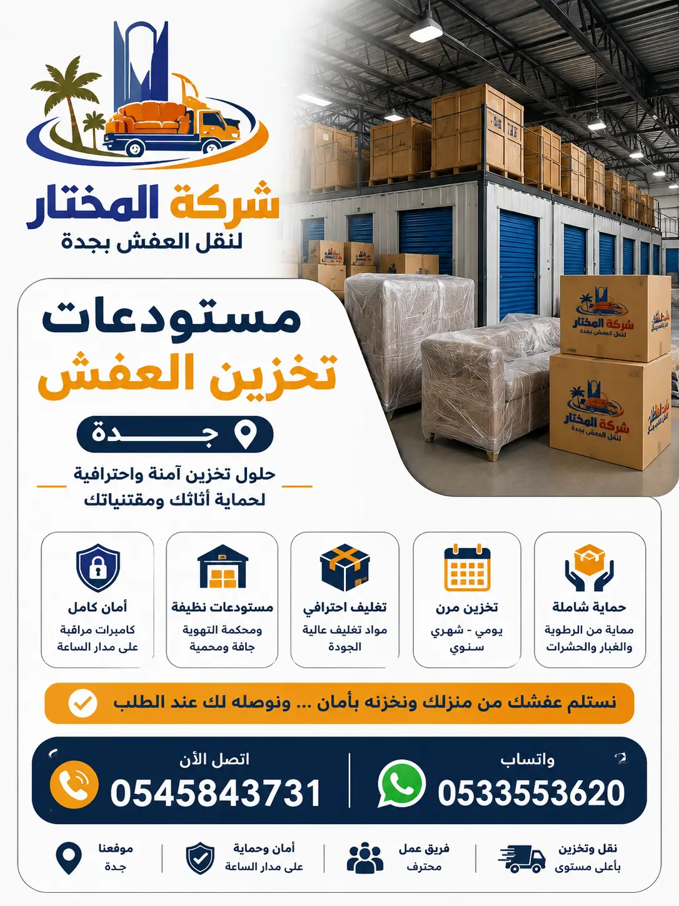

شركة تخزين عفش بجدة المختار تقدم خدمة تخزين الأثاث في جدة بأعلى معايير الأمان والحماية بأسعار تنافسية.
تعتبر شركة تخزين عفش بجدة من أهم الخدمات التي يحتاجها سكان جدة سواء للانتقال المؤقت أو للتخزين طويل المدى. نحن في شركة المختار لنقل العفش نقدم مستودعات تخزين أثاث جدة بأعلى معايير الجودة والأمان. ندرك أن أثاثك يمثل استثماراً كبيراً، لذلك نحرص على توفير بيئة تخزين مثالية تحميه من الرطوبة والحرارة والحشرات. خدمات تخزين العفش في جدة لدينا تشمل الاستلام من منزلك، التغليف الاحترافي، النقل إلى المستودع، والتسليم في الوقت المطلوب.
ما الذي يجعلنا أفضل شركة تخزين عفش بجدة؟ أولاً، خبرتنا الطويلة التي تتجاوز 15 عاماً في مجال نقل وتخزين الأثاث. ثانياً، مستودعاتنا مجهزة بأنظمة تحكم في درجة الحرارة والرطوبة، وكاميرات مراقبة على مدار الساعة، وأنظمة إنذار حديثة. ثالثاً، نوفر خدمات تغليف احترافية باستخدام أفضل المواد لحماية الأثاث من الخدوش والغبار. رابعاً، نقدم أسعاراً تنافسية تبدأ من 200 ريال شهرياً مع خصومات على فترات التخزين الطويلة. خامساً، نقدم ضماناً شاملاً على سلامة الأثاث المخزن.
سواء كنت بحاجة إلى تخزين أثاث منزل أو مكتب أو مطبخ، فإن فريقنا جاهز لتلبية احتياجاتك. اختيار شركة تخزين أثاث موثوقة هو قرار مهم، ونحن هنا لنكون الخيار الأمثل لك.

تتعدد الأسباب التي تدفع سكان جدة للبحث عن خدمات تخزين العفش في جدة. قد تكون في مرحلة انتقالية بين منزلين، أو تقوم بتجديد منزلك، أو تسافر لفترة طويلة، أو تحتاج إلى تخزين أثاث موسمي. خدمات النقل والتخزين المتكاملة التي نقدمها تجعل هذه العملية سهلة وآمنة. تخزين الأثاث ليس مجرد وضع القطع في مستودع، بل هو عملية منظمة تهدف إلى الحفاظ على جودة الأثاث وقيمته [citation:2]. في جدة، حيث تختلف الظروف المناخية، تصبح الحاجة إلى مستودعات تخزين مكيفة ومحمية أكثر إلحاحاً [citation:3].
أولاً: الانتقال بين المنازل – إذا كنت تنتقل من منزل إلى آخر، وقد يكون هناك فجوة زمنية بين تسليم المنزل القديم واستلام الجديد، فإن تخزين العفش هو الحل الأمثل لتجنب بقاء الأثاث في الشاحنات أو في بيئة غير مناسبة [citation:3]. ثانياً: عمليات التجديد والترميم – أعمال الدهان والنجارة والأرضيات قد تعرض أثاثك للخدش والغبار، لذلك من الأفضل نقله إلى مستودع آمن حتى الانتهاء من العمل [citation:3]. ثالثاً: السفر لفترات طويلة – إذا كنت مسافراً خارج جدة لفترة، فإن ترك الأثاث في المنزل دون استخدام قد يعرضه للتلف بسبب الرطوبة أو الحشرات. حماية الأثاث في مستودعاتنا يوفر لك راحة البال.
رابعاً: توفير المساحة – في حالة وجود أثاث زائد عن الحاجة في المنزل، يمكنك تخزينه في مستودعاتنا لتحرير المساحة وجعل منزلك أكثر اتساعاً وتنظيماً. خامساً: تخزين الأثاث الموسمي – مثل أجهزة التكييف في الشتاء، أو الأثاث الخارجي في الصيف. سادساً: الانتقال المؤقت – في حال الانتقال إلى سكن بديل لفترة محدودة، مع الحاجة إلى استرجاع الأثاث لاحقاً [citation:3]. سابعاً: تخزين قبل البيع أو الشراء – قد تحتاج إلى تخزين أثاث قديم قبل بيع منزلك، أو أثاث جديد قبل تجهيز المكان الجديد [citation:3]. أفضل شركات تخزين الأثاث في جدة توفر حلولاً مرنة تناسب جميع هذه الاحتياجات.
نقدم في شركة المختار حزمة متكاملة من خدمات تخزين العفش في جدة، تغطي كل مرحلة من مراحل العملية. الخدمة تبدأ بـ المعاينة المجانية، حيث يقوم فريقنا بزيارة منزلك لتقييم كمية الأثاث ونوعه، وتحديد المساحة المناسبة في المستودع. ثم نقدم لك عرض سعر شفاف يشمل جميع التكاليف من التغليف والنقل والتخزين والتسليم. بعد موافقتك، نبدأ بـ تغليف الأثاث احترافياً باستخدام أفضل المواد مثل البلاستيك الفقاعي والكرتون المقوى والأغطية القماشية [citation:3].
بعد التغليف، يتم نقل الأثاث إلى مستودعاتنا باستخدام سيارات مجهزة بأحدث أنظمة التثبيت والحماية. سيارات نقل العفش في جدة لدينا مغلقة بالكامل لحماية الأثاث من الغبار والعوامل الجوية. في المستودع، يتم ترتيب الأثاث بشكل منظم يسهل عملية الاسترجاع عند الحاجة [citation:2]. نوفر خيارات تخزين مرنة؛ قصيرة المدى (شهر – 6 أشهر) وطويلة المدى (أكثر من 6 أشهر) [citation:5]. كما نقدم خدمة التأمين على الأثاث المخزن ضد السرقة والحريق والأضرار الطبيعية [citation:4].
عند طلبك استرجاع الأثاث، نقوم بـ تسليمه إلى الموقع الذي تحدده داخل جدة أو خارجها. يمكننا تسليم الأثاث إلى أي مدينة في المملكة. فريقنا يقوم بإعادة تركيب الأثاث في منزلك الجديد حسب رغبتك. خدمة نقل الأثاث من الفلل والمنازل لدينا تشمل كل شيء بدءاً من التفكيك وصولاً إلى إعادة التركيب. نضمن لك تجربة تخزين خالية من المتاعب مع شركة تخزين أثاث بجدة توفر لك راحة البال.
يعتبر تغليف العفش قبل التخزين من أهم الخطوات التي تضمن سلامة أثاثك أثناء فترة التخزين. في شركة المختار، نولي التغليف أهمية قصوى، لأن الأثاث الذي يدخل المستودع دون تغليف مناسب قد يتعرض للخدوش والغبار والرطوبة [citation:2]. نستخدم مواد تغليف عالية الجودة مثل البلاستيك الفقاعي (Bubble Wrap) ثلاثي الطبقات، والكرتون المضلع المزدوج، والأغطية القماشية المقاومة للماء، والزوايا الكرتونية لحماية الحواف [citation:5].
المواد المستخدمة في تغليف العفش تختلف حسب نوع الأثاث. الأثاث الخشبي يحتاج إلى تغليف يحميه من الخدوش، بينما الأثاث الزجاجي يحتاج إلى طبقات إضافية من الفقاعات الهوائية. الأجهزة الإلكترونية تغلف بمواد مضادة للكهرباء الساكنة، والمراتب والأرائك تغلف بأغطية قماشية تحميها من الغبار. نقوم أيضاً بـ تفكيك الأثاث الكبير (مثل الأسرة والخزائن) لتسهيل نقله وتخزينه، مع الاحتفاظ بجميع البراغي والمسامير في أكياس مخصصة ومثبتة مع القطعة [citation:2].
عملية التغليف لا تقتصر على الحماية من الصدمات، بل تشمل أيضاً الحماية من الرطوبة والحرارة، خاصة في مناخ جدة حيث ترتفع درجات الحرارة والرطوبة في الصيف [citation:3]. مستودعاتنا مكيفة ومحكمة الإغلاق، والتغليف الجيد يضيف طبقة إضافية من الحماية. خدمات تخزين العفش في جدة التي نقدمها تشمل التغليف كجزء أساسي من الباقة، لأننا نؤمن بأن الأثاث المخزن يستحق أفضل حماية ممكنة.
نقدم في شركة المختار أسعاراً تنافسية وشفافة لخدمات تخزين العفش في جدة. الأسعار التالية هي تقديرية وتعتمد على حجم الأثاث ومدة التخزين ونوع المستودع. تكلفة تخزين الأثاث في جدة تختلف حسب المساحة المطلوبة (متر مربع) ومدة الإيجار (شهرية أو سنوية). نقدم عروضاً خاصة للتخزين طويل المدى (أكثر من 6 أشهر) بخصومات تصل إلى 20%.
| نوع الخدمة / حجم الأثاث | تخزين شهر (ريال) | تخزين 6 أشهر (ريال) | تخزين 12 شهراً (ريال) |
|---|---|---|---|
| أثاث شقة غرفة واحدة | 250 – 350 | 1,200 – 1,800 | 2,200 – 3,200 |
| أثاث شقة 3 غرف | 450 – 600 | 2,200 – 3,000 | 4,000 – 5,500 |
| أثاث فيلا صغيرة | 700 – 900 | 3,500 – 4,500 | 6,500 – 8,000 |
| أثاث فيلا كبيرة | 1,000 – 1,500 | 5,000 – 7,500 | 9,000 – 13,000 |
| تغليف احترافي (إضافي) | 200 – 600 | 200 – 600 | 200 – 600 |
الأسعار المذكورة أعلاه هي نطاقات تقريبية وقد تختلف حسب حجم الأثاث الفعلي ونوع المستودع (مكيف أو عادي). للحصول على عرض سعر دقيق، ننصح بطلب معاينة مجانية يقوم خلالها فريقنا بتقييم كمية الأثاث وتقديم السعر المناسب.
لمساعدتك على اتخاذ القرار الصحيح، نقدم لك جدول مقارنة يوضح الفروقات بين شركة المختار وبين شركات تخزين العفش الأخرى في جدة من حيث الأسعار والخدمات المقدمة.
| الميزة / الخدمة | شركة المختار | شركات أخرى |
|---|---|---|
| سعر شهري لشقة 3 غرف | 450 – 600 ريال | 600 – 850 ريال |
| تغليف احترافي | ✅ متضمن في الباقات | ❌ خدمة إضافية برسوم |
| مستودعات مكيفة | ✅ متوفرة | ⚠️ بعضها فقط |
| تأمين على الأثاث | ✅ متضمن | ❌ غير متوفر |
| معاينة مجانية | ✅ نعم | ⚠️ برسوم أحياناً |
| استلام وتسليم | ✅ داخل جدة وخارجها | ⚠️ داخل جدة فقط |
| خصم للتخزين الطويل | ✅ يصل إلى 20% | ❌ لا يوجد |
قبل اختيار شركة تخزين، تأكد من قراءة مقارنة شركات نقل وتخزين العفش للحصول على صورة كاملة عن الخدمات المقدمة والأسعار.
نقدم خدمات تخزين العفش في جميع أحياء جدة وجميع مدن المملكة. إليك قائمة بأهم الأحياء والمدن التي نغطيها:
"استخدمت خدمة تخزين العفش من شركة المختار لمدة 4 أشهر أثناء تجديد منزلي. كانوا محترفين جداً في التغليف والنقل، والمستودع كان نظيفاً ومكيفاً. أثاثي رجع بحالة ممتازة. أنصح بهم بشدة."
– أبو عبدالله، حي الحمدانية
"سافرت خارج المملكة لمدة 6 أشهر، وخزنت أثاثي بالكامل عند المختار. الأسعار كانت مناسبة جداً مقارنة بشركات أخرى، والخدمة كانت ممتازة. شكراً لكم على الأمان والجودة."
– أم محمد، حي السلامة
"نقلت مكاتب شركتي إلى مستودعات المختار أثناء فترة الانتقال، وكانت الخدمة سريعة ومنظمة. استلموا الأثاث من مكاتبنا في جدة وسلموه للمستودع في نفس اليوم. أنصح كل شركة تبحث عن تخزين آمن."
– أبو فيصل، مدير شركة في جدة
"كنت بحاجة لتخزين أثاث منزلي لفترة قصيرة بين الانتقالات، ووجدت في شركة المختار أفضل الأسعار والخدمة. التغليف كان احترافياً، والمستودع كان مؤمناً بالكامل. شكراً لكم على التعاون."
– أبو خالد، حي الشاطئ
تبدأ أسعار تخزين العفش في جدة من 250 ريال شهرياً للأثاث البسيط، وتختلف حسب حجم الأثاث ونوع المستودع (مكيف أو عادي). للحصول على عرض سعر دقيق، اتصل بنا.
نعم، نوفر مستودعات تخزين مكيفة بالكامل ومحكمة الإغلاق لحماية الأثاث من الرطوبة والحرارة، مما يحافظ على جودة الأثاث لفترات طويلة.
نعم، التغليف الاحترافي جزء أساسي من خدمتنا. نستخدم أفضل المواد لحماية الأثاث من الخدوش والغبار والرطوبة.
نعم، يمكنك استرجاع أثاثك في أي وقت خلال ساعات العمل الرسمية مع إشعار مسبق. نقدم خدمة التسليم إلى أي مكان داخل جدة أو خارجها.
نقدم خيارات تخزين مرنة؛ من شهر واحد إلى عدة سنوات. يمكن تمديد العقد أو إنهاؤه حسب رغبتك مع إشعار مسبق.
نعم، نقدم تأميناً شاملاً على الأثاث المخزن ضد السرقة والحريق والأضرار الطبيعية. يمكنك الاطلاع على شروط التأمين عند التعاقد.
نقوم باستلام الأثاث من منزلك باستخدام سيارات نقل مجهزة، ثم ننقله إلى المستودع بعد التغليف الاحترافي.
نعم، يمكنك زيارة المستودع خلال ساعات العمل الرسمية بالتنسيق المسبق مع فريقنا للاطمئنان على حالة أثاثك.
نعم، لدينا خدمات تخزين مخصصة للشركات والمكاتب مع حلول مرنة تناسب احتياجات الأعمال.
تبدأ الإجراءات بمعاينة مجانية، ثم تغليف الأثاث، ثم نقله إلى المستودع مع توثيق جرد شامل للمحتويات. يتم تسليم نسخة من الجرد للعميل.
نعم، نقدم خدمات التخزين في الرياض والدمام ومكة والمدينة وجميع مدن المملكة.
نعم، نقدم خصومات تصل إلى 20% للتخزين لمدة تزيد عن 6 أشهر، وخصومات خاصة للعملاء الدائمين.
نحن نضمن سلامة أثاثك من خلال التغليف الاحترافي، والمستودعات المكيفة والمؤمنة، وأنظمة المراقبة على مدار الساعة، والتأمين الشامل.
نعم، نقبل تخزين الأجهزة الإلكترونية بشرط تغليفها بشكل خاص لحمايتها من الرطوبة والصدمات. تعرف على أفضل طريقة لنقل الأجهزة الكهربائية.
عند طلبك استرجاع الأثاث، نقوم بإخراجه من المستودع، ونقله إلى الموقع الذي تحدده، وإعادة تركيبه حسب رغبتك.
احصل على أفضل خدمة تخزين أثاث في جدة مع شركة المختار - مستودعات آمنة ومكيفة بأسعار تنافسية وخدمة شاملة من الاستلام إلى التسليم
معاينة مجانية – تغليف احترافي – تأمين شامل – أسعار تنافسية